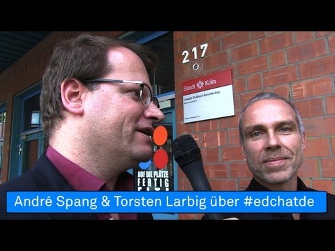

cc: André J. Spang
Gestern Abend um 20 Uhr trafen sich wieder einmal viele begeisterte Lehrerinnen und Lehrer im Twitterchat #EdChatDE. Seit mittlerweile einem Jahr findet der Chat jeden Dienstag Abend für eine Stunde statt. Im Zehn-Minutenrhythmus stellen die beiden Moderatoren Andre J. Spang und Herr Larbig Fragen, die mit einem vorgestellten F1, F2, ... eingeleitet und mit A1, A2, ... beantwortet werden. Fragen und Antworten rauschen in englischer und deutscher Sprache vorbei. Zum Schluss wird über das Thema der nächsten Sitzung abgestimmt und nach einer Stunde ist der ganze "Spuk" auch schon wieder vorbei.
Ich muss zugeben, dass ich das Konzept sehr zwiespältig betrachte und werde nun versuchen, die positiven und negativen Aspekte konkreter darzustellen.
Besonders gut gefällt mir, dass es sich beim #EDchatDE um eine Graswurzelbewegung handelt. Zwei Lehrer haben es einfach gemacht. Nicht lange überlegt oder geplant, sondern einfach mal ausprobiert. So muss es sein.
Ich bin auch immer wieder erstaunt, wie viele Lehrer sich jeden Dienstag Abends aufs Neue einfinden. Es gibt ein großes Interesse am berufsbezogenen Austausch. Das ist klasse. Und es gibt auch immer wieder Neues zu entdecken. Unterschiedliche Standpunkte wechseln sich gegenseitig ab, werden kurz aufgegriffen und verflüchtigen sich alsbald wieder. In einer Zusammenfassung werden die Inhalte in einem Wiki gebündelt. Das schafft einen guten Überblick.
Was mir an dieser Stelle beim #EDchatDE fehlt, ist die Tiefe. Viele gute Argumente und Hinweise verschwinden im Twitterstream, der an meinem Auge vorbei rast. Mir fehlt die Möglichkeit, inne zu halten, nachzudenken und zu reflektieren. Das Abwägen ist mir bei der Geschwindigkeit nicht möglich und muss nachher erfolgen. So wie in diesem Beitrag, den ich anlässlich eines Tweet von Frau Schütze (@ma_y) verfasst habe.
A6: mindestens jedem 2. oder 3. #edchatde einen Blogbeitrag folgen lassen, das eine spezielle Frage genauer beantwortet. bin dran.
—ma_y (@ma_y) 8. Juli 2014
Ein weiterer Kritikpunkt: Skaliert die Veranstaltung? Wen ja, in welche Richtung? Kann #EDchatDE für alle da sein? Lehrer, Professoren, Schüler, Eltern, etc.? Meine bittere Prognose muss leider negativ ausfallen. Um nicht an seinem eigenen Erfolg zu ersticken, täte der Chat gut daran, eine Nische zu finden, in der er gedeihen kann. Selbst, wenn er sich auf eine Gruppe wie Lehrer fokussiert, gibt es unterhalb der Lehrerschaft eine zu breite Auffächerung nach Fachrichtungen. Er kann im besten Falle jedoch Vorbild für weitere Veranstaltungen dieser Art sein, die einen engeren Fokus setzen.
Mein Fazit: Der #EDchatDE stellt nur den Anfang einer Folge von Verdichtungen dar. Inhalte, Konzepte, Argumente fliegen nur ungefiltert durch den Netzraum, Sie müssen anschließend durch Blogartikel - wie diesen - bewertet und verdichtet werden. Schließlich ergibt sich ein klareres Bild, das in einem Wikiartikel verfestigt werden kann - etwa im ZUM-Wiki.
Ich bin gespannt, wie es in einem Jahr um die Veranstaltung stehen wird und freue mich auf die weitere Entwicklung.